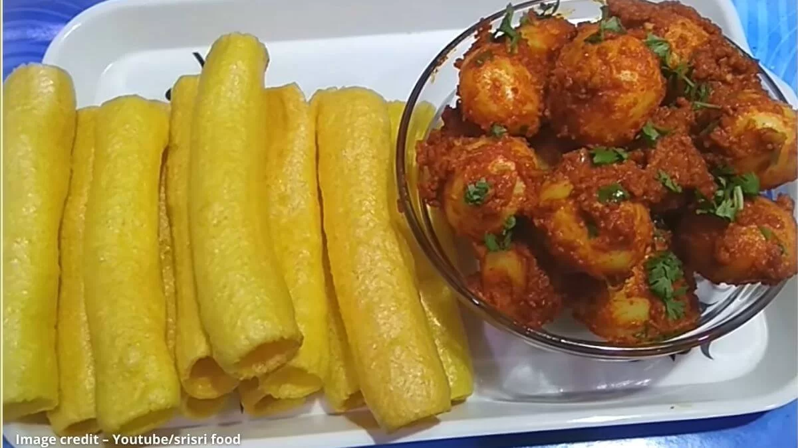

Firstly, I would heavily recommend using baby potatoes for this recipe. avoid using big potatoes, but if you do not have to access them, use a small-sized one and dice it to the size of baby potatoes.
I made chutney with garlic and soaked dry Kashmiri red chili, which gives good flavor and the perfect color to potatoes. You can use Kashmiri red chili powder instead of it.
I serve spicy potatoes with yellow bhungla (frymus), you can use any frymus or fried rice papad instead of it.
lastly, bhungla batata tastes great when prepared slightly spicy and creamy.